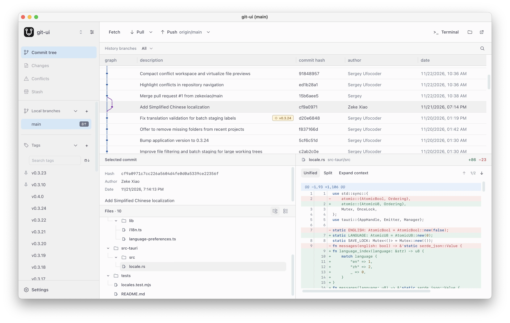

A little less terminal, a lot more clarity
A Git client for macOS and Windows. Explore your branches, review changes, and make your next commit with a clear view of the details

One window. The whole picture · Screenshot of the GIT UI app
Features
-
Commit history
Browse and search commits across local and remote branches
-
Review and commit
Review diffs, stage files or folders, and create, amend, or sign commits
-
Branches and tags
Pin branches and tags, rebase, and sync with remotes
-
Resolve conflicts
Compare both sides, jump between changes, and stage your resolution
-
Available in 3 languages
Choose English, Russian, or Simplified Chinese for the app interface
-
Switch themes
Preview light and dark palettes before applying one
Get started with GIT UI
It will always be free and open source
Full interface in 3 languages
- English
- Русский
- 简体中文 (Simplified Chinese)
Switch your language anytime in Settings
Choose the installer for your system. Make sure Git is installed before setting up GIT UI. Then open a local repository to get started
Download GIT UI
Desktop appChecking available downloads…
Installers are hosted on GitHub Releases
All releasesFound a bug or have an idea? Tell us on GitHub Issues